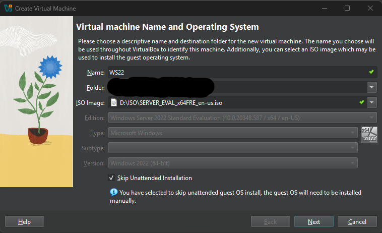
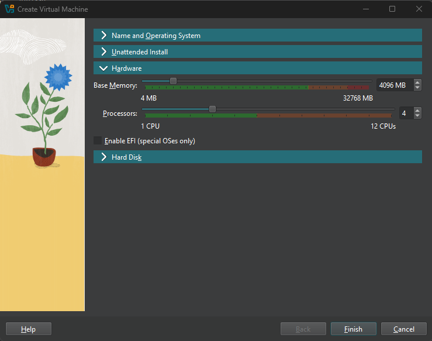
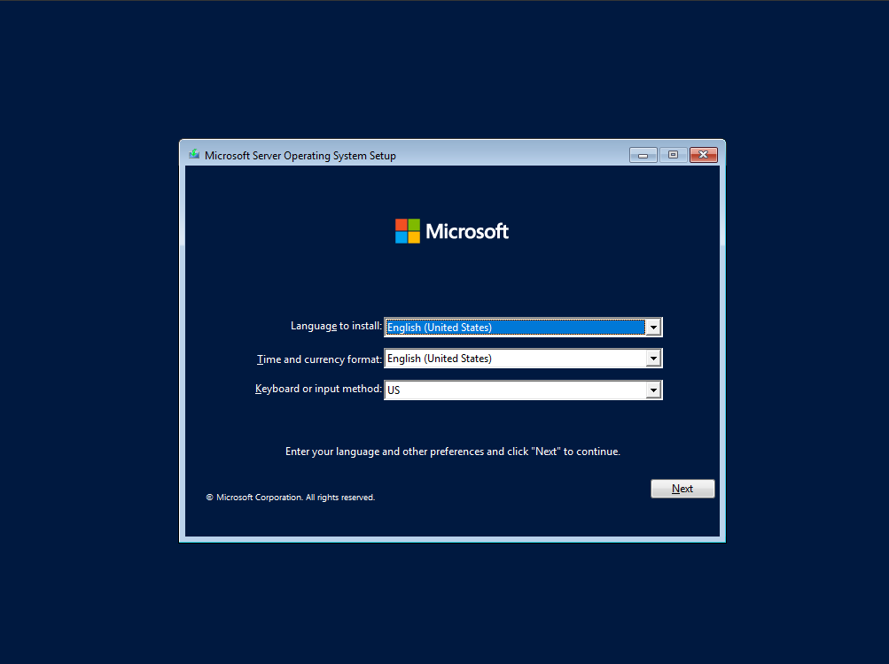
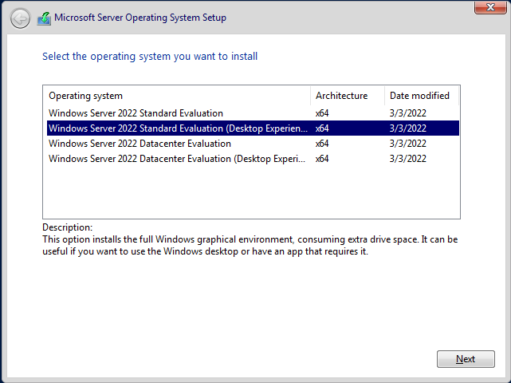
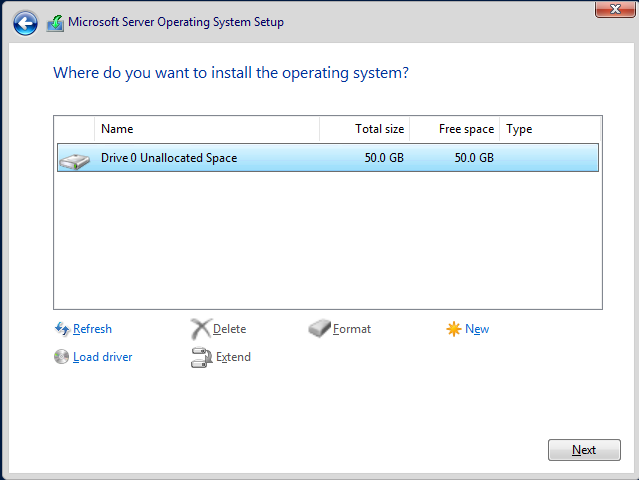

Requirements
-
Windows Server 2022 ISO
Download Here
Just fill out the form with “legit” info and download it.
-
VirtualBox
Download Here
You could also use VMware.
-
You will also need a host computer with decent specs to run a virtual machine and also that has at least 32GB of free storage.
How to create and install Windows Server 2022.
I’ll walk you through the steps to set up a virtual machine running Windows Server 2022 using VirtualBox.
Virtual machine creation
- Open VirtualBox and click new.
- In the window that pops up, name your virtual machine.
- Under ISO image, find and select your Windows 2022 ISO. The file you downloaded earlier.
- Check the box that says "skip unattended installation", then click Next.

- Under hardware, select the amount of resources you want to allocate. I suggest a minimum of 4GB of RAM and at least 2 cores. Click Next.

- For hard disk storage choose any amount you want above 32 GB. That's the required minimum. Click Finish when done.
- You should now see it on the left-hand side. Right-click on it and go to settings.
- Head to the Network section and select your preferred network type.
Here’s a quick breakdown:
- NAT: Quick internet, no special setup.
- Bridged: Makes the virtual machine like a real device on the network.
- Internal: VMs talk to each other, but no one else.
- Host-Only: VMs talk to the host and each other, but not the internet.
- Generic: For custom configurations.
- Hit OK when you're done. Your virtual machine is now created. Next, we will install Windows Server 2022 on it.
Installing Windows Server 2022
- Go to your virtual machine and double-click on it to run. Wait for the Windows prompt to pop up.
- Select your language and then click Next.

- Select Windows Server 2022 standard evaluation (Desktop Experience)
(If you choose the first option, it’s just command-line—no GUI.)

- Accept the terms.
- Select Custom installation.
- Select your drive. And click Next.

- The installation will begin. It might take a little while and restart a couple of times—just let it do its thing.
- After it's done it'll ask you to set up a password for the admin account. Set one up and hit Finish. Congratulations! You have just created a virtual machine running Windows Server 2022!
← Back to Tutorials